Der Kreis ist der geometrische Ort aller Punkte einer Ebene, die von einem festen Punkt dieser Ebene, dem Mittelpunkt des Kreises, einen konstanten Abstand, den Radius des Kreises, haben. Zum Unterschied von der durch einen Kreis in der Ebene begrenzten Kreisfläche wird der Kreis selbst auch als Kreislinie oder Kreisperipherie bezeichnet.
Jede Gerade durch zwei Punkte der Kreisperipherie heißt Sekante, die auf ihr im Kreisinnern gelegene Strecke heißt Sehne.
Geraden, die einen und nur einen Punkt mit dem Kreis gemeinsam haben, heißen Tangenten des Kreises.
Kreise werden mit dem Radius r, dem Durchmesser d sowie mit einer Reihe von Winkeln beschrieben, die hier nicht im Bogenmaß, sondern im Gradmaß des dazugehörigen Zentriwinkels  (linke Abbildung) gemessen werden.
(linke Abbildung) gemessen werden.
Sätze, Strecken, Fläche
| 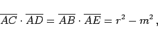 | (3.61) |
| 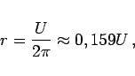 | (3.64) |
| 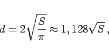 | (3.65) |
| 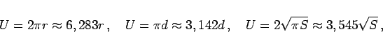 | (3.66) |
| 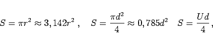 | (3.67) |
| 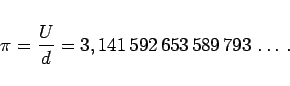 | (3.68) |
| Beispiel | ||||||||||||||||||||||||
|
Berechnung der Entfernung des Horizontes x auf der Erde als Funktion von der Höhe h über der Erdoberfläche: Gemäß Sekantentangentensatz (3.62) erhält man mit 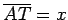 und m=h+r die Formel 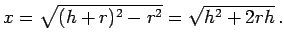 Einsetzen des Erdradius r=6371,11 km gemäß KRASSOWSKI ergibt für h und x:
|
Winkel im Kreis
Speziell gilt der Satz des THALES
| 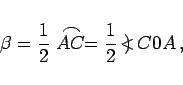 | (3.70) |
| 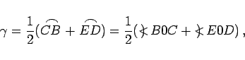 | (3.71) |
| 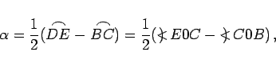 | (3.72) |
| 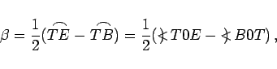 | (3.73) |
In (3.74) sind D und E beliebige Punkte auf dem linken bzw. rechten Kreisbogen. Wegen der Winkel in den Formeln (3.69a) bis (3.74) s. Definition des Winkels.